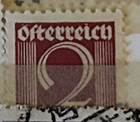
| SOURCE | TITLE| IMAGE MATCH | click to source page |
| Find Your Stamps Value | Value of republik+osterreich+bein+1853 stamps | 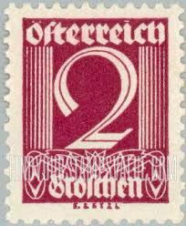 |
| eBay | AUSTRIA 1925 448a,b ** MNH FLAWLESS good COLORS (F8910 | eBay | 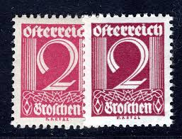 |
| eBay UK | AUSTRIA 304 (Mi448) - Numeral of Value "1925 Claret" (pb76007) | eBay UK | 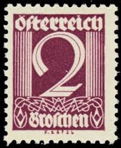 |
| lastdodo.com | Gustav Chaudoir & Comp. Perfin catalogue - LastDodo | 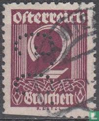 |
| Alamy | Cancelled postage stamps printed by Austria, that show different people and motives from Austria Stock Photo - Alamy | 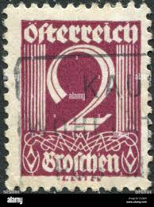 |
| Poppe Stamps | Poppe Stamps: Austria, 1925, 574, Numbers - Values And Letters - Characters - stamps for sale by theme and country | 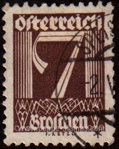 |
| 123RF | AUSTRIA - CIRCA 1949: Sello Impreso Por Alemania, Austria, Muestra Mujer En Austian Trajes, Circa 1949 Fotos, retratos, imágenes y fotografía de archivo libres de derecho. Image 18113248 | 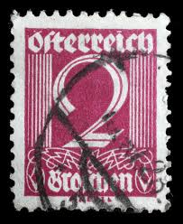 |
| Colnect | Austria : Stamps [Year: 1932] [1/6] : Colnect 📮 | 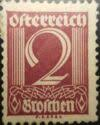 |
| Todocolección | austria. año 1963 * yvert 970 - Buy Antique stamps of Austria on todocoleccion | 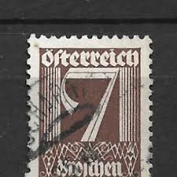 |
| Find Your Stamps Value | Wert von Republik Osterreich Portomarke Groschen Briefmarken | 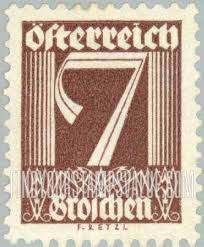 |
| Aukro.cz | Rakousko 1925 Mi: AT 448 Série: Definitivní 1925/27 - čísla | Aukro | 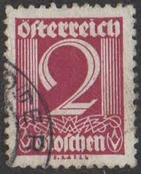 |
| Allnumis | Catalog de timbre - Lista de timbre pentru Diverse, Austria | 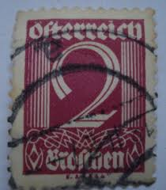 |
| alamy.de | Österreich - ca. 1925: Briefmarke gedruckt von Österreich zeigt weißen Schultern Adler, ca. 1925 Stockfotografie - Alamy | 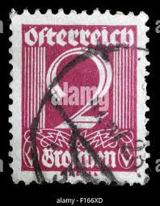 |
| Find Your Stamps Value | Value of Republik Osterreich Portomarke 1 stamps | 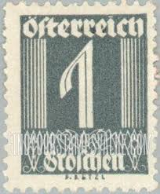 |
| Dreamstime.com | Ornament editorial image. Imagine din algeria, curbat - 154214365 | 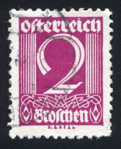 |
| iStock | Stamp Printed In Germany Shows Germania Stock Photo - Download Image Now - 1916, Allegory Painting, Antique - iStock | 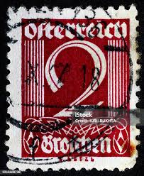 |
| eBay | Briefmarke Ziffernserie Porto 3 Groschen Österreich gestempelt | eBay | 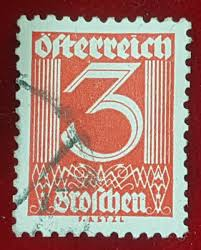 |
| eBay | Stamps Austria 1925 Mi 453 MNH 1925 Postage (10582359 | eBay | 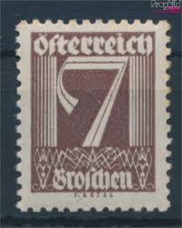 |
| Aukro | Rakusko 1925 Mi 448 | Aukro | 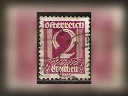 |
| Find Your Stamps Value | Value of republik osterreich 3g stamps | 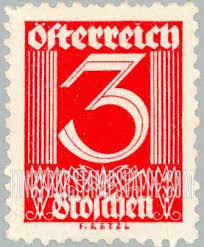 |
| UNC.UA | Филателия — купить марки и конверты Австрии на аукционе для коллекционеров UNC.UA | 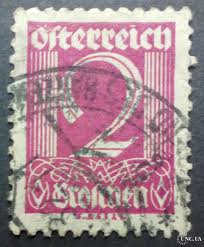 |
| eBay | AUSTRIA:1925-27 SC#304-05 MNG AJ219 | eBay | 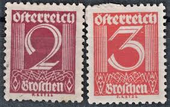 |
| Alamy | 1910s train hi-res stock photography and images - Alamy | 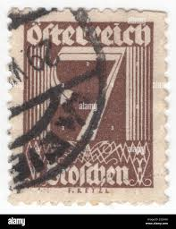 |
| BalkanAuction | Postage stamps | Philately | Collectibles | BalkanAuction | 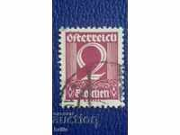 |
| The RainKey | King Stamp – Page 2 – The RainKey | 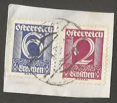 |
| Alamy | Train 1930s united states hi-res stock photography and images - Alamy | 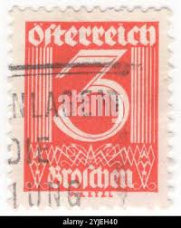 |
| Alamy | 1920s 1930s 3 people Cut Out Stock Images & Pictures - Alamy | 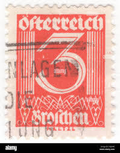 |
| Dreamstime.com | Number 15 Stamp Stock Photos - Free & Royalty-Free Stock Photos from Dreamstime | 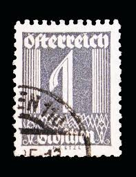 |
| Dreamstime.com | Numerals Postage Stock Photos - Free & Royalty-Free Stock Photos from Dreamstime | 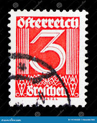 |
| Osta.ee | 24-14 austria varia (247815602) - Osta.ee | 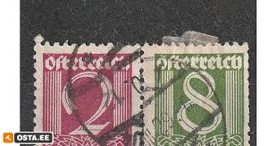 |
| blkmarket | Stickers Archives – BLKMARKET© | 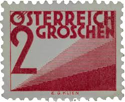 |
| Shutterstock | 3+ Hundred 3 Groschen Royalty-Free Images, Stock Photos & Pictures | Shutterstock | 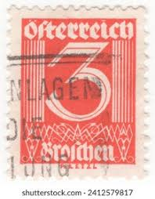 |
| HipStamp | Austria Overprint on Germany stamp | Europe - Austria, Stamp / HipStamp | 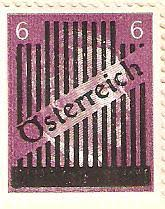 |
| Dreamstime.com | Vintage Car 1933 Chevrolet Coupe Editorial Photo - Image of badge, manufacturer: 37981071 | 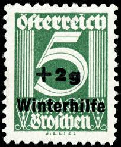 |
| eBay | 1971-1980 Year of Issue Postage Austrian Stamps for sale | eBay | 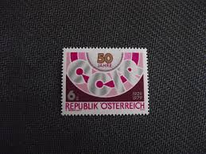 |
| Todocolección | scott, walter. marmion. 1855 - Buy Other antique books in different languages on todocoleccion | 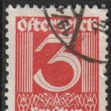 |
| lastdodo.com | Adolf Hitler stamp German Reich with overprint 3 (1945) - Austria - LastDodo | 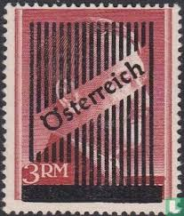 |
| eBay | Austria Stamp Issue Complete Scott # 1111 Unused Never Hinged... | eBay | 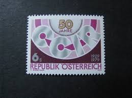 |
| Alamy | 10 heller hi-res stock photography and images - Alamy | 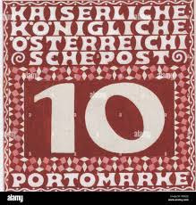 |
| Shutterstock | Austria Circa 1925 Stamp Printed Austria Stock-foto 84280321 | Shutterstock | 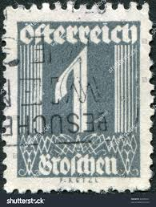 |
| Stamp Community Forum | Same Stamp - Different Value - Page 3 - Stamp Community Forum | 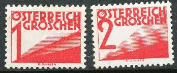 |
| eBay UK | Radio Postage European Stamps for sale | eBay UK | 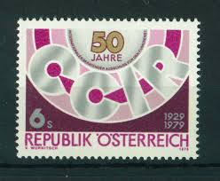 |
| eBay | Austria 1979 MNH & CTO NH Mi 1598 Sc 1111 Radio Consultative Committee CCIR | eBay | 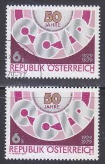 |
| Todocolección | austria 1863 scott 19 usado - 18/2 - Buy Antique stamps of Austria on todocoleccion | 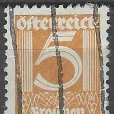 |
| Bid Inside Auctions | Österreich, 1925, Portomarke ANK 142 PU I, ... - Merkurphila - online philatelics auctions | 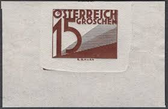 |
| Poppe Stamps | Poppe Stamps: Austria, 1925, D595, Numbers - Values And Letters - Characters, Postage Due Stamps - stamps for sale by theme and country | 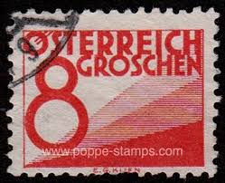 |
| Shutterstock | Austria Circa 1925 Stamp Printed Austria Stock Photo 84280321 | Shutterstock | 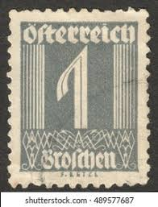 |
| eBay UK | Austria T27 MLH 1925 Corn grain Numbers 3v | eBay UK | 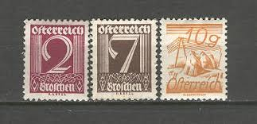 |
| Sbazar | známka Lenin 1949 - Olomouc - Bazar - Sbazar.cz | 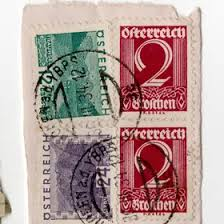 |
| eBay | Austria Z54 MNH 1979 Blocks set 4v Emblem CCIR | eBay | |
| Alamy | Triangle stamp hi-res stock photography and images - Page 5 - Alamy | |
| Shutterstock | 1+ Thousand Year 1979 Royalty-Free Images, Stock Photos & Pictures | Shutterstock | |
| HipStamp | Austria Unissued 1m-5m Adolf Hitler Overprint Postage Stamps Europe 1945 MNH | Europe - Austria, Stamp / HipStamp | |
| eBay | 1598 - Austria 1979 - International Radio Consultative Committee CCIR - MNH Set | eBay | |
| eBay | AUSTRIA 1945 668-673 ** MNH FLAWLESS SET OVERPRINTS GRID (05782 | eBay | |
| Shutterstock | Postage Due Stamps: Over 1,237 Royalty-Free Licensable Stock Photos | Shutterstock | |
| eBay | Austrian Postage Due Stamps for sale | eBay | |
| eBay | AUSTRIA 1953 The Reconstruction of the Protestant School at Karlsplatz Square | eBay | |
| eBay UK | Historical Events Mint Hinged Austrian Stamps for sale | eBay UK |